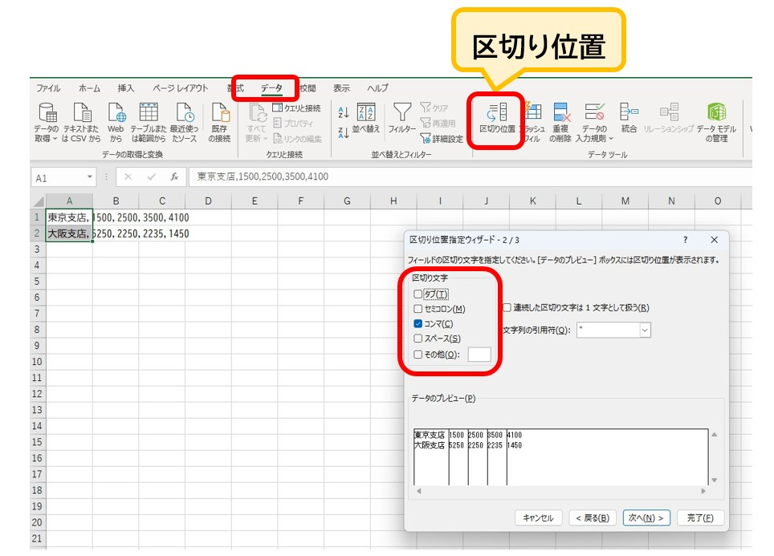
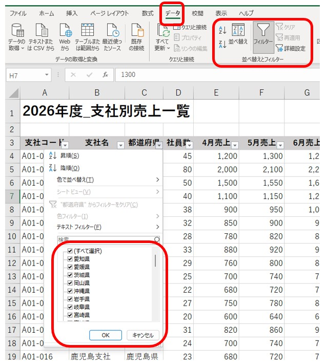

ExcelでCSV・データを整理する方法
～区切り位置・並べ替え・フィルター・テーブルの使い方～
仕事でExcelを使っていると、取引先からもらったデータや、社内システムからダウンロードしたデータを扱うことがあります。
たとえば、次のようなデータです。
大阪支店,5250,2250,2235,1450
一見すると表のように見えますが、これはカンマ（,）でデータを区切った文字列です。
このような形式は、CSV（シーエスブイ）ファイルなどでよく使われています。
ところが、こうしたデータをExcelにコピー＆ペーストしたとき、
「全部A列に入ってしまった……」
ということがあります。
そんなときに役立つのが、Excelの「区切り位置」です。
ただし、データを表の形に戻しただけでは終わりません。
その後、データを扱いやすい形に整えておけば、並べ替えやフィルターを使って必要な情報を探せるようになります。さらに、継続してデータを蓄積するなら「テーブル」という機能も役立ちます。
この記事では、
データを受け取る → 分ける → 整える → 並べ替える → 絞り込む → 管理する
という流れで、Excelのデータを扱う基本をまとめます。
1列にまとまったデータを「区切り位置」で分ける
「区切り位置」は何をする機能？
Excelの「区切り位置」は、1つのセルにまとまって入っているデータを、指定した文字を目印にして複数のセルへ分ける機能です。
たとえばA1セルに、
と入っているとします。
ここで「カンマ」を区切り文字として指定すると、
| 支店名 | 1月 | 2月 | 3月 | 4月 |
|---|---|---|---|---|
| 東京支店 | 1500 | 2500 | 3500 | 4100 |
というように、データを列ごとに分けることができます。
つまり「区切り位置」は、1列にまとまってしまったデータを、表として扱える形に戻すための機能です。
仕事ではどんなときに使う？
特に覚えておきたいのが、CSVなどのデータを扱う場面です。
取引先から送られてきたデータや、社内システムからダウンロードしたデータなどが、コピー＆ペーストの方法によっては1列にまとまってしまうことがあります。
このとき、データを一つずつ打ち直す必要はありません。
「何を境目にしてデータが切れているのか」が分かれば、「区切り位置」を使ってまとめて分けることができます。
「区切り位置」を使うときのポイントは、データが何の文字で区切られているかを見ることです。
一番分かりやすいのはカンマですが、データによってはタブやスペースなどが使われていることもあります。
「区切り位置を使おう」と考える前に、
どの文字がデータの境目になっているのか？
を確認しておくと、設定を間違えにくくなります。
実際に「区切り位置」を使ってみよう
ここでは、1列にまとまったデータを分ける手順を確認します。
① データが入っているセルを選択する
まず、分けたいデータが入っている範囲を選択します。
複数行のデータをまとめて分ける場合は、その範囲全体を選択しておきます。
② 「区切り位置」を開く
Excel画面上部の「データ」タブをクリックし、「区切り位置」をクリックします。
③ データの種類を選択する
ウィザードが表示されたら、
「コンマやタブなどの区切り文字によってフィールドごとに区切られたデータ」
を選択して「次へ」をクリックします。
④ 区切り文字を指定する
今回のデータはカンマで区切られているので、「カンマ」にチェックを入れます。
画面下のプレビューを確認し、データが正しい位置で分かれていればOKです。

▲ プレビューを見ながら、正しく分かれているか確認しましょう
⑤ 完了して表を確認する
問題がなければ「完了」をクリックします。
1つのセルにまとまっていたデータが、それぞれの列に分かれます。
データを選択 → 「データ」タブ → 「区切り位置」 → 区切り文字を選ぶ → プレビューを確認 → 完了
この流れを覚えておけば、1列にまとまったデータを見たときに慌てず対応できます。
カンマ以外でも分けられる
「区切り位置」はカンマ専用の機能ではありません。
データの形式に応じて、タブ、セミコロン、スペースなどを区切りとして指定できます。
大切なのは、特定の記号を暗記することではありません。
「このデータは、何を境目にして区切られているのか？」
と考えることです。
その目印が分かれば、「区切り位置」を使ってデータを分けることができます。
「区切り位置」を実行する前に、右側を確認しよう
ここは初心者の方が特に注意したいポイントです。
「区切り位置」を実行すると、分割されたデータは元のセルから右側のセルへ順番に入っていきます。
たとえばA列に入っているデータを5つに分ける場合、A列だけでなく、B列、C列、D列、E列にもデータが入ります。
もし右側にすでに別のデータが入っていると、分割したデータによって既存のデータが上書きされる可能性があります。
「区切り位置」を使う前に、
「このデータを分けたら、右側のセルに入るな」
と考えて、B列以降に大切なデータがないか確認してください。
便利な機能ほど、実行する前の確認が大切です。
データを「表として扱いやすい形」に整える
ここまでで、1列にまとまったデータを列ごとに分けることができました。
しかし、セルにデータが入っていれば、それだけで扱いやすい表になるわけではありません。
Excelでは、その後に並べ替えたり、フィルターを使ったり、データを追加したりすることがあります。
そのためには、最初からデータをある程度ルールに沿って整理しておくことが大切です。
1行＝1件のデータとして考える
Excelでデータを扱うときに覚えておきたい言葉があります。
フィールドとレコードです。
- フィールド（列）：支店名や売上金額など、データの「項目」
- レコード（行）：1件分のデータをまとめたもの
たとえば、
| 支店名 | 売上 | 担当者 |
|---|---|---|
| 東京支店 | 150000 | 山田 |
| 大阪支店 | 125000 | 佐藤 |
という表なら、「支店名」「売上」「担当者」がフィールドで、東京支店の1行、大阪支店の1行がそれぞれレコードです。
難しく感じる必要はありません。
まずは、
「1行につき1件のデータ」
と考えておけば大丈夫です。
この形が整っていると、後で並べ替えやフィルターを使うときにも扱いやすくなります。
データを扱うときに意識したいこと
データを蓄積していく表なら、
- 1行に1件のデータを入れる
- 1列に1つの項目を入れる
- 列の先頭に項目名を付ける
- 表の途中に不要な空白行を入れない
- 表の中に別のメモなどを混在させない
といったことを意識してみてください。
見た目をきれいにするためだけのルールではありません。
後から、
「このデータを並べ替えたい」
「東京支店だけ表示したい」
「売上が一定以上のものだけ探したい」
となったときに、データが整理されているほどExcelの機能を使いやすくなるからです。
並べ替えでデータを見やすくする
データが増えてくると、入力された順番のままでは必要な情報を探しにくくなることがあります。
そこで使えるのが「並べ替え」です。
並べ替えとは、データを一定のルールに従って順番を変えることです。
昇順と降順
並べ替えには、基本的に昇順と降順があります。
昇順
小さいものから大きいものへ並べます。
たとえば、
- 売上金額なら「1万円 → 5万円 → 10万円」
- 日付なら「古い日付 → 新しい日付」
という順番です。
降順
大きいものから小さいものへ並べます。
たとえば、
- 売上金額なら「10万円 → 5万円 → 1万円」
- 日付なら「新しい日付 → 古い日付」
という順番です。
つまり、並べ替えでは、
「どの項目を基準に、どちらの順番で並べるか」
を決めます。
たとえば売上管理表なら、売上金額を降順にすれば、売上の大きいデータから確認できます。

▲ 「データ」タブにあるボタンから、昇順・降順の切り替えやフィルターの設定が行えます
並べ替えるときの注意点
Excelの表を並べ替えるときは、氏名・部署・売上など、1行に関連しているデータをまとめて扱う必要があります。
例えば、氏名と売上の表で、売上の列だけを単独で選んで並べ替えてしまうと、氏名と売上の対応関係がバラバラに崩れてしまいます。
そのため、並べ替えを行うときは、「1列だけを並べ替えるのではなく、1行分のデータをセットとして扱う」という意識が大切です。
（※Excelの並べ替え機能では、選択範囲を拡張する確認画面が表示されることもありますが、操作する際は表全体が正しく選択されているか確認するようにしましょう。）
並べ替えをする前に、表のすぐ隣や上に、余計なメモや別のデータがくっついていないか確認してください。
Excelが表の範囲を正しく判断できない状態で操作すると、意図しないデータまで並べ替えの対象になってしまうことがあります。
特に、表の横にちょっとしたメモを置いているようなファイルは注意が必要です。
「どこからどこまでが、この表なのか」
を確認してから操作する。
これはExcelの機能を覚えることとは少し違いますが、仕事でデータを壊さないためには大切な習慣です。
フィルターで必要なデータだけを表示する
大量のデータの中から、条件に合うものだけを表示したいときは、「フィルター」が便利です。
たとえば100件の売上データから、
「東京支店だけ見たい」
「5,000円以上のデータだけ見たい」
という場合に使えます。
ここで覚えておきたいのは、
フィルターはデータを削除しているわけではない
ということです。
条件に合わない行を一時的に表示しない状態にしているだけなので、条件を解除すれば元のデータを見ることができます。
数値フィルターで「範囲」を指定する
フィルターでは、単純に項目を選ぶだけでなく、数値を条件にして絞り込むこともできます。
たとえば、
「5,000以上、6,000以下」
という範囲を指定して、その条件に合うデータだけを表示できます。

▲ 見出しの▼ボタンから「数値フィルター」→「指定の範囲内」を使うと、数値を条件に絞り込めます

▲ 「以上」「以下」などの条件を組み合わせて、対象のデータを抽出できます
数値フィルターの「AND」と「OR」
ここで重要になるのが、AND（かつ）とOR（または）の違いです。
たとえば、
5,000以上、6,000以下
という条件で考えてみます。
AND（かつ）
2つの条件をどちらも満たすものを表示します。
つまり、
5,000以上 AND 6,000以下
です。
「5,500」は5,000以上であり、同時に6,000以下でもあるため、条件に合います。
OR（または）
2つの条件のどちらか一方でも満たすものを表示します。
たとえば、
5,000以上 OR 6,000以下
とすると、5,000以上のデータだけでなく、6,000以下のデータも対象になります。
そのため、条件によってはかなり広い範囲のデータが表示されることになります。
つまり、
「○○から○○の間」という範囲で探したいときは、ANDを使う
と覚えておくと分かりやすいでしょう。
ANDとORで迷ったら、イメージで覚えておくと分かりやすいです。
ANDは「条件の重ね着」
1つ目の条件と2つ目の条件を、両方クリアする必要があります。
一方、
ORは「条件の並列」
です。
「東京支店または大阪支店」のように、複数の条件のどれかに当てはまるものをまとめて見たいときに向いています。
フィルターは単に「データを隠す機能」ではありません。
「何を探したいのか」を条件に置き換える機能
と考えると、使い方が分かりやすくなります。
フィルターを使っていることが分かる状態にする
フィルターで絞り込みを行うと、該当するデータだけが表示されます。
元のデータを削除したわけではありません。

▲ フィルター実行中。条件に一致するデータのみが表示されています
こうした状態が分かるようになっていることも、仕事でExcelを共有するときには大切です。
Excelの「テーブル」は使ったほうがいい？
ここまでのように、データを整理して並べ替えたり、フィルターを使ったりする場合、Excelの「テーブル」という機能も便利です。
テーブルにすると、データを管理しやすくなります。
ただし、
「Excelの表は全部テーブルにすればいい」
というわけではありません。
実際の仕事では、あえて普通のセル範囲のまま使われているExcelもたくさんあります。
その理由を知っておくと、テーブルを使う場面と使わない場面を判断しやすくなります。
テーブルが敬遠されることがある理由
テーブルにすると、列全体がひとまとまりとして扱われます。
データを追加すると書式や数式が自動的に反映されたり、フィルターが使いやすくなったりする一方で、慣れていない人にとっては、
「普通のセルと少し違う」
と感じることもあります。
また、
「この部分だけ少し違う形にしたい」
といった例外的な操作がしにくかったり、テーブル内では見た目を整えるためのセル結合ができなかったりするなど、レイアウト重視の資料とは相性がよくありません。
日本の職場では、Excelをデータ管理だけでなく、帳票や書類を作るための道具として使う場面も多くあります。
そのため、すべてのExcel表をテーブルにする必要はありません。
「データの目的」でテーブルを使い分ける
テーブルを使うかどうかを考えるときは、
「この表は何のためにあるのか？」
を考えてみてください。
たとえば、顧客情報や商品情報、売上データなど、これからデータを追加しながら管理していく表なら、テーブルと相性がよいでしょう。
一方で、決まったレイアウトの書類を作ることが目的なら、通常のセル範囲のほうが扱いやすい場合があります。
テーブルに向いているもの
- 顧客一覧
- 商品一覧
- 売上データ
- 名簿
- CSVから取り込んだデータ
テーブルに向いていないもの
- 請求書
- 見積書
- 申請書
- 報告書
- レイアウトを重視する資料
大切なのは、
「テーブルだから優れている」のではなく、「目的に合っているか」で判断することです。
テーブルに変換する手順とメリット
売上管理表のように、データを継続して追加していく表は、テーブルにすると管理しやすくなります。
テーブルに変換するには、次の手順で行います。
- 表の中のセルを1つ選択する
- 「挿入」タブをクリックする
- 「テーブル」をクリックする
- 表として認識された範囲を確認する
- 先頭行が見出しの場合は「先頭行をテーブルの見出しとして使用する」を確認する
- 「OK」をクリックする
（※Excelのバージョンによって、画面の表示や文言が多少異なる場合があります。）

▲ 「挿入」タブから「テーブル」を実行すると、表を管理しやすい形式に変換できます
テーブルにすると、自動でフィルターボタンが付きます。
また、1行おきに色が付くことで、横に長い表でも同じ行を追いやすくなります。
さらに、データが増えたときにもテーブルの範囲を広げやすく、継続的にデータを管理するときに便利です。

▲ テーブル変換後の表。1行おきに色が付くことで、横に長いデータも追いやすくなります
実務で大切なのは「元データを壊さない」こと
Excelの操作に慣れてきたときこそ意識したいのが、
元のデータを壊さないこと
です。
Excelには、並べ替えやテーブルへの変換など、表の構造そのものを変える操作があります。
便利な一方で、操作を間違えると意図しない状態になることもあります。
「非表示」ではなく「フィルター」を使う
特定の行を見えなくしたいからといって、右クリックから「非表示」にする方法もあります。
しかし、仕事で他の人と共有するファイルなら、単純に行を非表示にするよりもフィルターを使ったほうが、今の状態を伝えやすくなります。
別の人がファイルを開いたとき、
「データが減っているのか、それとも隠れているだけなのか」
が分からない状態は、思わぬミスにつながる可能性があります。
フィルターを使えば、絞り込み中であることが分かりやすくなります。
Excelでは、
「自分が操作できればいい」ではなく、「次にこのファイルを見る人にも分かる状態にしておく」
という視点も大切です。
大きな修正の前には「予備」を残しておく
並べ替えやテーブルへの変換など、表の構造を大きく変える操作をするときは、大きな変更をする前に、必要に応じて元データをコピーして残しておくのも一つの方法です。
万が一、思ったような結果にならなかった場合でも、元の状態を確認できます。
「失敗したらどうしよう」と不安なまま操作するより、
「元のデータは残してある」
という状態で作業したほうが、落ち着いて操作できます。
これは特別なExcelテクニックではありません。
仕事で大切なデータを扱うときの、基本的な習慣として覚えておきたいポイントです。
Excelのデータを扱う流れを整理しよう
ここまでの内容を、一つの流れとして整理してみましょう。
- データを受け取る
CSVなどのデータをExcelで扱います。 - 1列にまとまっていたら「区切り位置」を使う
カンマやタブなど、データの区切りとなっている目印を確認します。 - データを扱いやすい形に整える
1行＝1件、1列＝1項目という形を意識します。 - 並べ替える
日付や金額など、必要な項目を基準に順番を整えます。 - フィルターで必要なデータを探す
支店や金額などの条件を指定して、必要なデータだけを表示します。 - 必要に応じてテーブルにする
今後もデータを追加して管理していく表なら、テーブルの利用を検討します。 - 元データを壊さない
大きな変更をするときは、元データを確認したり、必要に応じてコピーを作ったりします。
この流れで考えると、「区切り位置」「並べ替え」「フィルター」「テーブル」が、それぞれ別々の機能ではなく、データを扱うための一連の道具として見えてきます。
まとめ｜Excelは「データを活かす」ための道具
Excelは、文字や数字を入力するだけのソフトではありません。
外部から受け取ったデータを整理し、必要な情報を探し、並べ替えたり、条件を指定して絞り込んだりしながら、仕事で使いやすい形にしていくことができます。
ここで、これまでに見てきた主な機能の役割を改めて整理しておきましょう。
- 「区切り位置」 ＝ 1つにまとまったデータを分ける
- 「並べ替え」 ＝ データの順番を変える
- 「フィルター」 ＝ 条件に合うデータを表示する
- 「テーブル」 ＝ データを継続して管理しやすくする
そして、実務で大切にしたいポイントをまとめると、次のようになります。
- データは1行＝1件、1列＝1項目を意識する
- 並べ替えでは、1列だけではなく1行分のデータをセットとして扱う
- データを継続して管理するならテーブルも便利だが、書類やレイアウト重視の資料まで無理にテーブルにする必要はない
- 大きな操作をするときは、元データを壊さないことを意識する
大切なのは、Excelの機能を一つずつ暗記することだけではありません。
「このデータを、どう整理すれば仕事がしやすくなるか」
と考えることです。
CSVで受け取ったデータを整え、必要な情報を探し、継続して管理する。
こうした使い方を覚えていくと、Excelは単なる「入力する場所」から、「仕事を進めるための道具」へ変わっていきます。